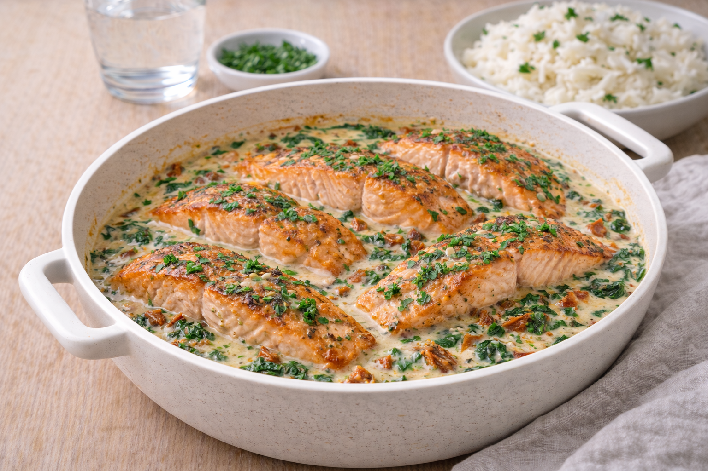

Gravad lax med spenatsås
Gravad lax med krämig spenatsås. Snabbt, fräscht och perfekt när du vill ha något lätt men gott.

Ingredienser
- 300–400 g gravad lax
- 200 g fryst spenat
- 2 dl grädde
- 1 msk citronjuice
- Salt och svartpeppar
- 1 msk smör
Så lagar du
- Tina spenaten och krama ur vätska.
- Smält smör i kastrull och lägg i spenaten.
- Häll i grädde och låt sjuda 5 minuter.
- Smaka av med citron, salt och peppar.
- Servera gravad lax med spenatsås och kokt potatis eller pasta.
Tips & variationer
- Toppa med dill och lite extra citron.
- Vill du göra det matigare: servera med kokt potatis och sallad.